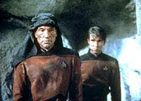
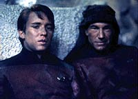
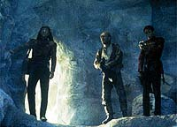
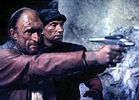
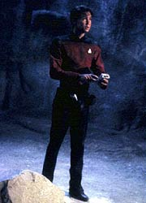

|
MANCHETE
DO EPISDIO
Wesley
bem utilizado pela primeira
vez em seu episdio de despedida
Episdio
anterior | Prximo
episdio
Sinopse:
Data Estelar: 44307.3.
Wesley Crusher finalmente aceito na Academia da Frota. Porm,
antes que deixe a Enterprise, ele acompanha o capito Picard em uma
ltima misso, uma mediao de uma disputa entre mineiros. A
nave auxiliar que estava sendo utilizada para lev-los ao planeta
apresenta um defeito e sofre um acidente em uma lua deserta.
 O
piloto morre e Picard fica seriamente ferido, contando apenas com
Wesley, que nada sofreu no acidente, para mant-lo vivo at a
chegada do resgate da Enterprise, que est ocupada atendendo a um
chamado de socorro de um planeta prximo, cuja biosfera estava sob
ameaa de uma nave carregada com lixo radioativo.
Comentrios:

irnico que o melhor uso j dado a Wesley tenha sido justamente em
seu episdio de despedida. Se logo de cara ele tivesse mostrado
tanto potencial quanto em "Final Mission", o
personagem no teria sido o foco da ira dos fs por quase quatro
temporadas.
A histria se devota a desenvolver o relacionamento entre Jean-Luc
Picard e Wesley Crusher --algo que se aproxima muito de uma situao
entre um pai e um filho. Wesley ganha uma chance de ouro de obter a
admirao e o respeito do capito, e no deixa a oportunidade
escapar.
 Neste
momento a relao que sempre existiu na forma de contexto entre
Picard e Wesley surge como fora motora primordial do episdio.
Seria um prato cheio para uma histria piegas, cheia de clichs e
perigosos melodramas.
Escapando de todas essas armadilhas, os roteiristas traaram uma
forma muito bonita de mostrar os sentimentos dos dois. E pela
primeira vez um episdio centrado em Wesley Crusher conseguiu
vingar, contornando todos os problemas do personagem.
 Em
vez de o esprito cientfico do personagem servir apenas para
tornar Wesley um garoto-prodgio superdotado e canastro (como
ocorreu em toda a srie), aqui ele joga favoravelmente. Wesley
coloca suas habilidades verdadeiramente a servio de um propsito
razovel.
O raciocnio cientfico do Wesley, ao evitar tirar concluses
apressadas ou agir precipitadamente, ajuda a mostrar a importncia
da conscincia no agir. A falta dessa habilidade custou muito a
Dirgo, o capito da nave de transporte.
 As
locaes e os filtros de imagem (para dar o tom excessivamente
amarelo da paisagem) utilizados para as filmagens no deserto foram
bastante convincentes, assim como o cenrio em estdio (a
caverna).
A subtrama --o resgate de uma nave cheia de lixo radioativo em um
planeta prximo-- s um motivo para tirar a Enterprise de ao
e deixar Wesley agir, no exigindo quaisquer comentrios.
Citaes:
Picard - "What
are you doing in such a filthy uniform?"
("O que voc est fazendo nesse uniforme imundo?")
Wesley - "You don't look so ship-shape yourself, sir."
("O do sr. tambm no est l essas coisas, senhor.")
Trivia:
 Neste episdio Wesley no salva a nave, apenas o capito.
"Ele salvou diretamente a nave apenas umas duas vezes e deu uma
mo na soluo de alguns problemas umas trs vezes
apenas!", diz Wil Wheaton, defendendo-se do desprezo dos fs.
Neste episdio Wesley no salva a nave, apenas o capito.
"Ele salvou diretamente a nave apenas umas duas vezes e deu uma
mo na soluo de alguns problemas umas trs vezes
apenas!", diz Wil Wheaton, defendendo-se do desprezo dos fs.
Corey Allen retorna para sua primeira direo
de uma episdio da Nova Gerao desde "Home
Soil", da 1 temporada.
Nick Tate, que interpreta o piloto da nave
auxiliar acidentada, Dirgo, mais conhecido por ter atuado na srie
de TV "Space: 1999".
Wesley
voltar a aparecer na srie no episdio "The
Game", da 5 temporada.
Ficha
tcnica:
Histria de Kacey
Arnold-Ince
Roteiro de Kacey Arnold-Ince e Jeri Taylor
Direo de Corey Allen
Exibido em 19/11/1990
Produo: 083
Elenco:
Patrick Stewart como
Jean-Luc Picard
Jonathan Frakes como William Thomas Riker
Brent Spiner como Data
LeVar Burton como Geordi La Forge
Michael Dorn como Worf
Gates McFadden como Beverly Crusher
Marina Sirtis como Deanna Troi
Wil Wheaton como Wesley Crusher
Elenco convidado:
Nick Tate
como Dirgo
Kim Hamilton como Songi
Mary Kohnert como alferes Tess Allenby
Episdio
anterior | Prximo
episdio
|